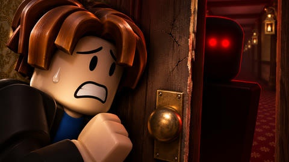
01 door gap
bacon · Stalker
cinematic macro
50 distinct horror thumbnail concepts · 1920 × 1080 PNG · November 8, 2026
Click any image to open its full-size export. The set mixes text-free artwork and short-headline creatives, with hythe55, xendatro, and bacon-hair guests.

bacon · Stalker
cinematic macro
xendatro · ShadowFigure
rainy neo-noir 3D
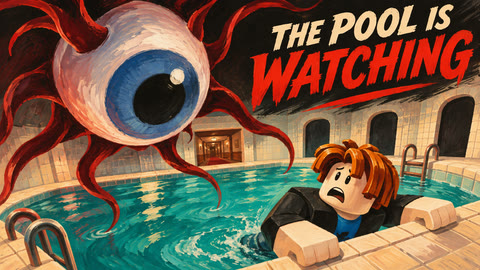
bacon · Eye
1960s hand-painted creature-feature poster
hythe55 · Sister
clean cel-shaded horror comedy
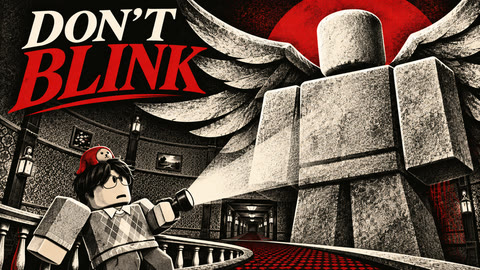
xendatro · Weeping-Angel
black white red graphic screenprint
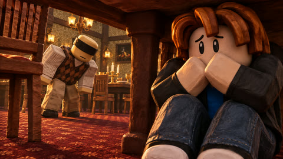
bacon · Blind
stop-motion clay horror
hythe55 · Chaser
high-energy cinematic 3D
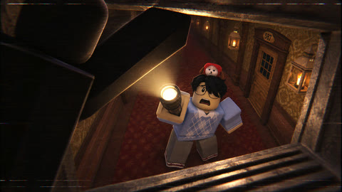
xendatro · Ceiling-Dweller
found-footage VHS
bacon · Mimic
stylized anime thriller
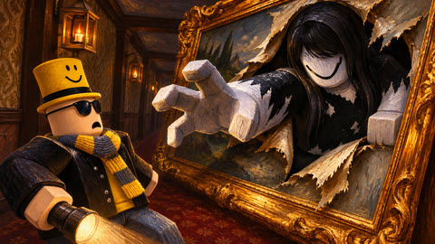
hythe55 · Painting-Dweller
expressive oil painting
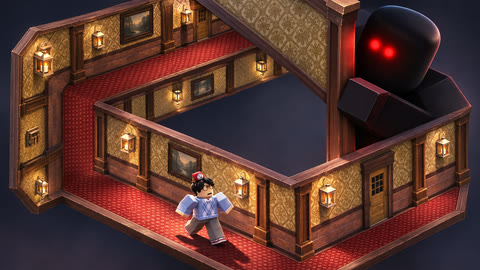
xendatro · Stalker
surreal architectural cutaway
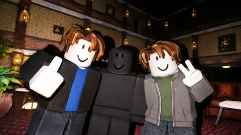
bacon · ShadowFigure
flash photography horror
hythe55 · Sister
bold comic-book splash
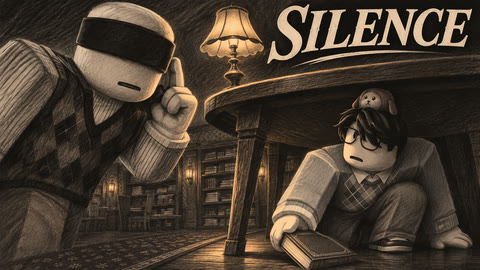
xendatro · Blind
monochrome charcoal drawing
bacon · Sister
underwater cinematic horror
hythe55 · Weeping-Angel
minimalist atmospheric poster
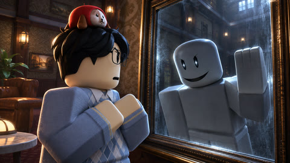
xendatro · Mimic
psychological cinematic 3D
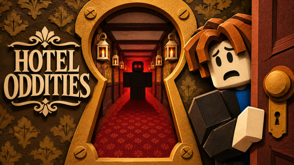
bacon · Stalker
paper-cut shadow theatre
hythe55 · Ceiling-Dweller
playful polished blocky 3D
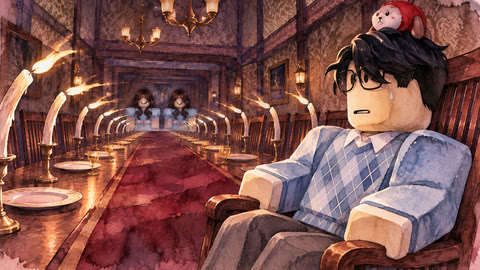
xendatro · Sister
gothic watercolor
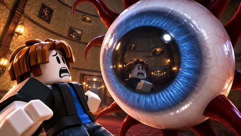
bacon · Eye
macro photoreal materials on Roblox
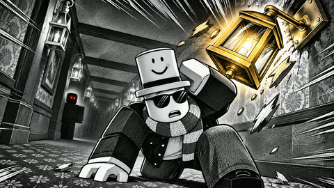
hythe55 · Stalker
dynamic manga screentone
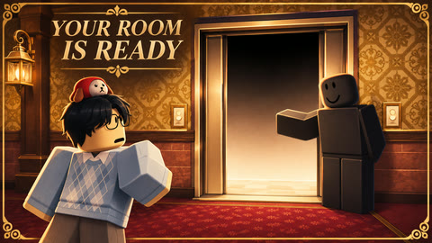
xendatro · ShadowFigure
luxury vintage travel advertisement corrupted by horror
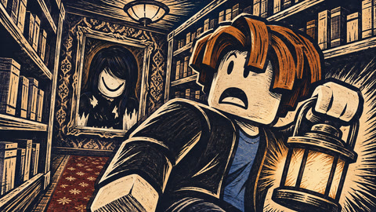
bacon · Painting-Dweller
woodcut horror
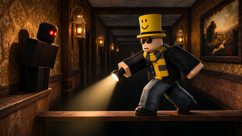
hythe55 · Stalker
low-key dramatic studio-quality 3D
xendatro · Chaser
retro 1980s horror video-cover airbrush
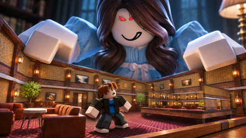
bacon · Sister
tilt-shift miniature horror
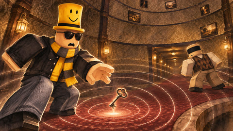
hythe55 · Blind
luminous ink wash
xendatro · Stalker
cinematic single-point-light suspense
bacon · Ceiling-Dweller
Escher-like surreal illustration
hythe55 · Mimic
two-color risograph poster
xendatro · Chaser
bright readable cinematic action
bacon · Painting-Dweller
uncanny painted portrait poster
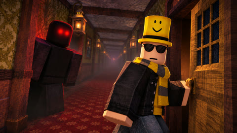
hythe55 · Stalker
PS1 low-poly horror
xendatro · Sister
elegant editorial collage
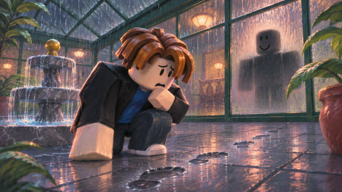
bacon · ShadowFigure
atmospheric pastel painting
hythe55 · Eye
claustrophobic wide-angle 3D
xendatro · ShadowFigure
high-contrast cinematic noir
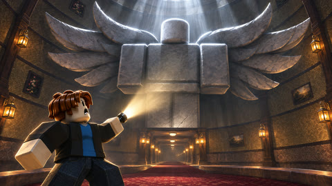
bacon · Weeping-Angel
epic dark-fantasy matte painting
hythe55 · Blind
flat geometric modern horror poster
xendatro · Stalker
polished toy diorama render
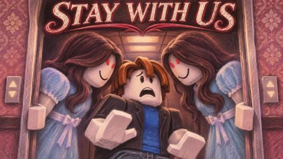
bacon · Sister
dreamlike chalk pastel horror
hythe55 · ShadowFigure
high-impact photographic 3D
xendatro · Stalker
comic action painted over 3D
bacon · Eye
pixel-art game cover
hythe55 · Chaser
restrained suspenseful cinematic 3D
xendatro · Painting-Dweller
scratchboard horror illustration
bacon · Mimic
cinematic ensemble key art
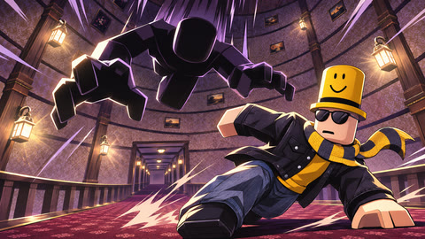
hythe55 · Ceiling-Dweller
graphic anime action key art
xendatro · Stalker
premium illustrated campaign finale